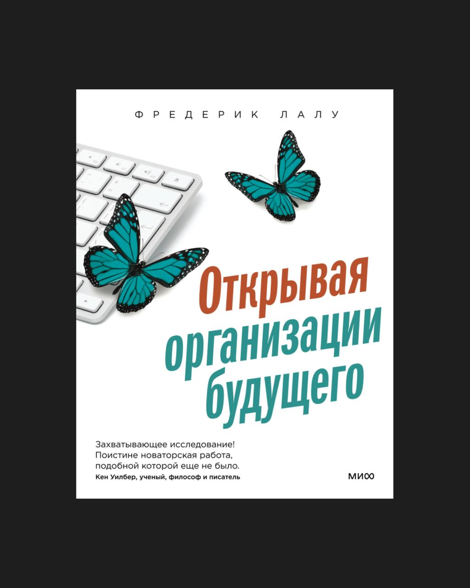

Продолжаю серию из 100 книг, которые сильнее всего повлияли на меня и на работу агентства. Эта книга — одна из самых значимых. Она не просто вдохновила, а укрепила вектор нашего развития и стиля управления.
После Джима Коллинза, который доказал на примерах, что децентрализация эффективнее иерархии, я стал направлять агентство в сторону самоуправления. А потом прочитал Лалу — и получил подтверждение, что мы на правильном пути. После неё мы пошли ещё глубже.
Мы начали сокращать контроль, давать больше свободы в принятии решений. Можно было не приходить в офис, работать из дома и по своему графику (это было задолго до пандемии). Когда позже перешли полностью на удалёнку, опора на принципы самоорганизации помогла сделать это спокойно — с доверием.
Сейчас это наш способ жизни и работы. Я даже не представляю, как можно иначе. Роль лидера для меня — не управлять и контролировать, а создавать среду, где люди раскрываются.
В карточках собрал самые полезные идеи из книги.
Карточки
Организация - не машина, а живой организм
Большинство компаний построены как машины: чёткие функции, управление сверху, контроль результатов. Но организация может быть живым организмом - с чувствами, ростом, внутренним ритмом. Не управляй - выращивай. Не программируй - наблюдай и настраивай. Это требует не контроля, а зрелости и доверия.
Самоуправление возможно - если есть правила и зрелость
Отсутствие начальников - не хаос. Это система, в которой роли, ожидания и ответственность чётко обозначены. Вместо вертикали - сеть. Вместо контроля - договорённости. Это не слабость, а высокая планка: свобода требует взрослости, ясности и настоящей включённости в общее дело.
Цель не назначается - она раскрывается
Бирюзовые компании не строят бизнес «ради бизнеса». Они слушают, в чём их живое предназначение. Эволюционная цель - это не маркетинг и не слоган. Это внутренний зов организации, к которому можно прислушаться и начать идти. Она задаёт направление - а не фиксирует результат.
Целостность сотрудников - это стратегическое преимущество
Когда в организации можно быть собой, появляется глубина: искренность, энергия, внутренняя вовлечённость. Люди перестают притворяться и начинают по- настоящему участвовать. Не разрывай личное и рабочее. Создай среду, где можно быть живым, чувствовать и расти.
Культура сильнее структуры
Структура определяет, кто кому подчиняется. А культура - как люди действуют, решают конфликты, берут ответственность. Можно нарисовать идеальную схему, но без культуры она работать не будет. Сильная культура - это не хаос, а живой порядок, встроенный в поведение.
КРІ без смысла - это выгорание
Метрики важны, но они не заменяют смысла. Люди включаются по- настоящему не ради цифр, а ради ценности. Без этого придётся всё время заставлять, контролировать, стимулировать. Сначала ответь: зачем? Потом ставь цели. Смысл - это топливо, которого не купишь.
Доверие - это не риск, а технология
В зрелых командах доверие - не случайность, а система. Оно строится на ясности, открытости, ответственности. Контроль - дороже. Он отнимает время, энергию и мотивацию. Создавая пространство, где доверие нормально, ты создаёшь организацию, где растут люди и результаты.